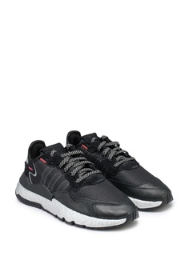

Ladies, you have reached the right place. PALMASTELLA BOUTIQUE is present to provide the best in trends for women's fashion. We bring good international and local brands to ensure that you are comfortable with a wide selection of shoes such as sandals, sneakers, heels and sport shoes who are more comfortable wherever you are. Get out in the most elegant heels, or make a statement with tight leather shoes. Prefer stylish comfort? Try classic slippers, simple sandals and lifestyle. All clothing requires a matching bag. Just make your choices from the online shoe collection that we have and let us deliver them to your door step. Start your retail therapy today and as soon as possible to avoid missing the best deals offered at the best online fashion destination. Our latest collection of shoes is so stylish that when you wear our heels would definitely turn heads on you. How good does that sound? We have plenty of branded women shoes with amazing qualities, and with good price too. Roam the stress of the city with the best shoes and make everyone envy with your ensemble with the help of your marvelous pair of women shoes. Do not forget to pair them with your most perfect ensemble. A perfect match would make you look chic and stylish.
WOMEN’S SHOES COLLECTION
Sandal
Milliot & Co (Black & Pink)RM54.90
Milliot & Co.RM59.00
Adidas RM89.00
Puma RM99.00
Puma RM99.00
Sandal may not be noticed by men as compared to a 6 inch stiletto, they can however make or break an outfit. The right sandal can make a simple dress look glamorous and can be matched with almost any outfit. They are gradually becoming a fashion statement in the fashion world today. Unlike during old ages where sandals were worn for comfort, they have since crossed over and became trendy, savvy and most importantly designer statements that are worn by both men and women today. Since they expose most of the foot, sandals not only comfortable for long walks during vacation, they are also perfect to be worn during our all-year-round tropical climate or in summer season, definitely a must-have in every women’s shoe collection. If you want to look stylish while staying comfortable, pick up a pair of sandal from PALMASTELLA BOUTIQUE today!
Sneakers
Puma RM199.00
Puma RM199.00
Puma RM199.00

Adidas RM189.00
Adidas RM199.00
Wedge sneakers are getting so popular nowadays. You might have even noticed that top celebrities and models in Hollywood have started walking here and there with this type of women sneakers! So let’s make you the local trendsetter by getting yourself a pair of wedge sneakers Malaysia. The question is where to get them? Of course here on our online fashion store where we offer a huge collection of wedge sneakers online Malaysia! We have a plenty of wedge sneakers in our store. So get ready to be amazed. With so many choices that can be made it would be easier for you to create different wedge sneakers look when matched with your favourite outfits. Our wedge sneakers price is also the best in Malaysia that you can’t find anywhere else.
Heels
Clark RM199.00
Clark RM199.00
Clark RM189.00
PALMASTELLA BOUTIQUE is widely known as the ultimate paradise that offers amazing collection of fashion items for women. Our virtual store is the number one choice in Malaysia that is loved by fashion lovers all over the country. This is because we cater all your needs and have been trying so hard to please your increasing demands for good quality products. One of our most popular items is kasut tinggi. Not just it comes with the best stylish designs in the modern market but our kasut tumit tinggi can be owned at superb price that is affordable too! Doesn’t that sound great? Now you don’t have to worry going off your budget when you shop for heels with us. Browse through our website to see our high heels collection that is purse friendly ranging with the best price in Malaysia.
Sport shoes
Nike RM159.00
Nike RM179.00
Nike RM149.00
Under armour RM199.00
Under armour RM189.00

Rebook RM189.00
Rebook RM189.00
Rebook RM199.00
Buy in PALMASTELLA BOUTIQUE is a good pair of nice sport shoes with the correct design to fit the shape of your feet. People with broad and flat feet need shoes that are able to accommodate the broadness while people with high arches need support to balance them out. Shoes made out of low quality materials will certainly not last the distance and wear and tear will occur at a faster rate than you can say run.